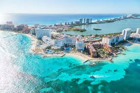

Cidade de Cancún
Caún,no México,é um dos destinos turísticos mais populares do mundo, famoso pelas suas praias de areia branca, águas cristalinas e vida noturna vibrante. Localizada na Península de Yucatán,é a porta de entrada para o Caribe e a cultura maia. Oferece uma combinação de relaxamanto, aventura e cultura.
